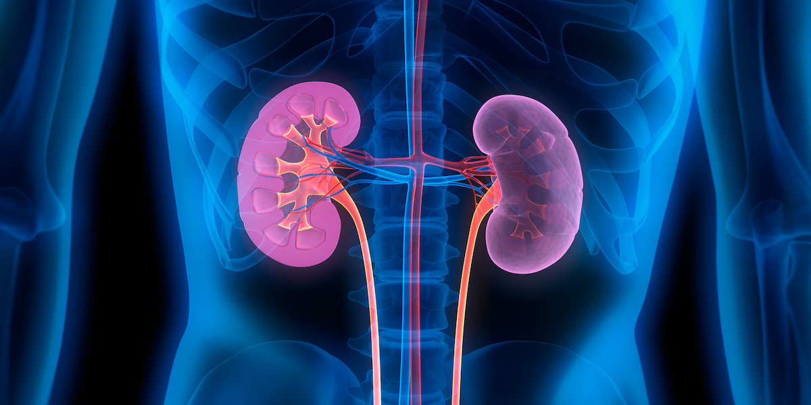

MMIST ccRCC Dataset Benchmark
ccRCC is the most common type of kidney cancer, making up to 80% of all renal cell carcinoma cases in adults. Estimating the prognosis is critical for patient management, but
is still a very challenging task. The ongoing research on this topic has led to the creation of two public studies:CPTAC-CCRCC and TCGA-KIRC, from which we curated MMIST-ccRCC.

MMIST Camelyion 16 and 17 Dataset Benchmark
The Camelyon16 and Camelyon17 datasets are widely recognized benchmarks for metastasis detection in breast cancer whole-slide images (WSIs). These datasets include hundreds of annotated WSIs from lymph node sections, enabling the development and evaluation of AI models for cancer metastasis identification and classification. MMIST-Camelyon provides a curated, multi-modal version of these datasets to support robust benchmarking in computational pathology research.